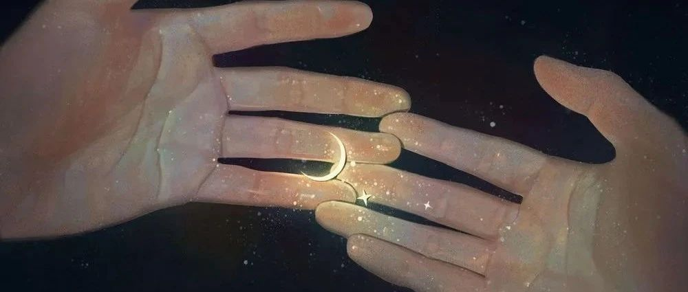

荐书 | 弗洛姆《爱的艺术》
雪明
爱同行 夕颜
2022年06月24日 18:11
广东
如何过好人生？弗洛伊德说：去爱，去工作！
爱是天生的能力吗？
只要付出努力，爱就会有想要的结果吗？
爱是无条件的付出吗？
对此我们心中常常有疑惑，比如我们常常听到各种抱怨，来自朋友或陌生人，诉说自己无论怎么努力的对对方好，好像对方就是不领情，或者被对方当作理所当然，或者得到一张好人卡后被抛弃。
父母对于子女也常常如此，在自己的能力范围内尽可能的给予更好的物质条件，报各种补习班让孩子以后可能进入好的学校，出来后有一份体面的工作。但孩子常常和父母对着干，还听到有的孩子去了美国读书之后就中断了与家人的联系。这到底是怎么了呢？
《爱的艺术》这本书也许是对这些问题的一个解答。
《爱的艺术》是德裔美籍心理学家和哲学家、法兰克福学派重要成员艾里希-弗洛姆最著名的作品，自1956年出版至今已被翻译成32种文字，在全世界畅销不衰，被誉为当代爱的艺术理论专著最著名的作品之一。
在这本书中，弗洛姆认为，爱情不是一种与人的成熟程度无关，只需要投入身心的感情。如果不努力发展自己的全部人格并以此达到一种创造倾向性，那么每种爱的试图都会失败，如果没有爱他人的能力，如果不能真正谦恭地、勇敢地、真诚地和有纪律地爱他人，那么人们在自己的爱情生活中也永远得不到满足。
弗洛姆进而提出，爱是一门艺术，要求想要掌握这门艺术的人有这方面的知识并付出努力。在这里，爱不仅仅是狭隘的男女爱情，也并非通过磨练增进技巧即可获得。爱是人格整体的展现，要发展爱的能力，就需要努力发展自己的人格，并朝着有益的目标迈进。
这本书在微信读书APP上可以获得，有心的朋友可以看看。